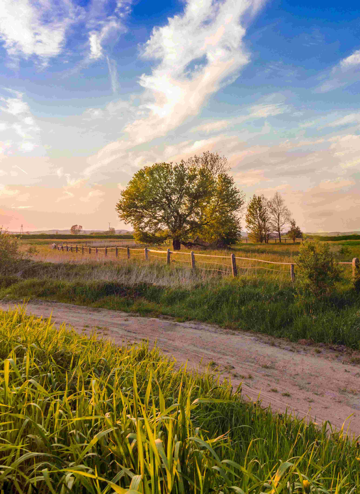
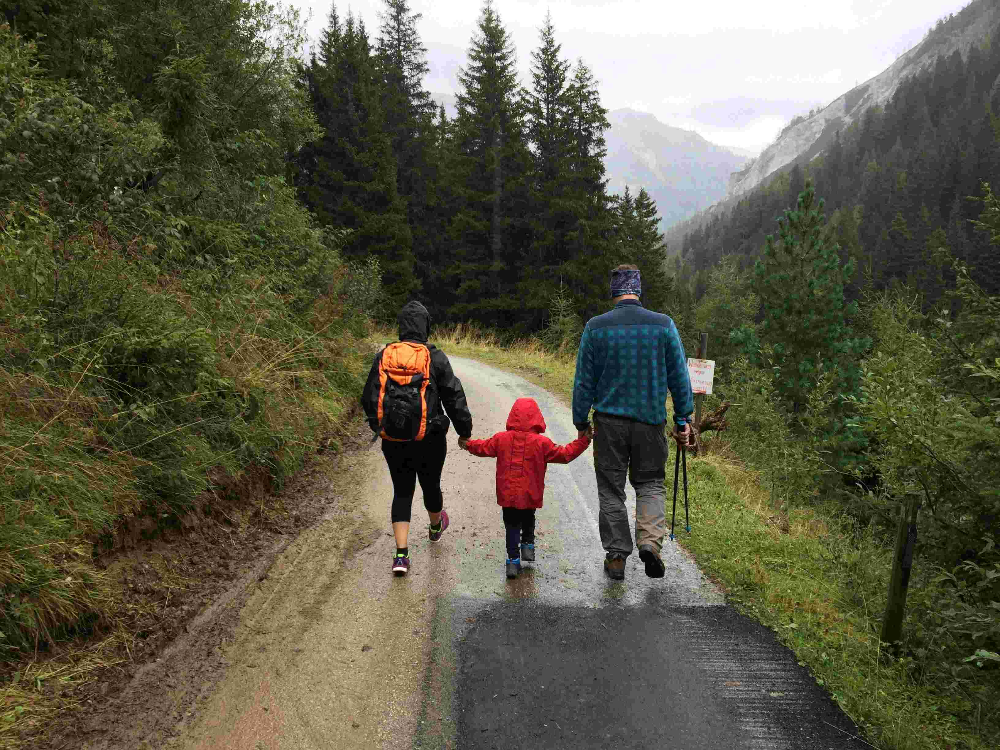
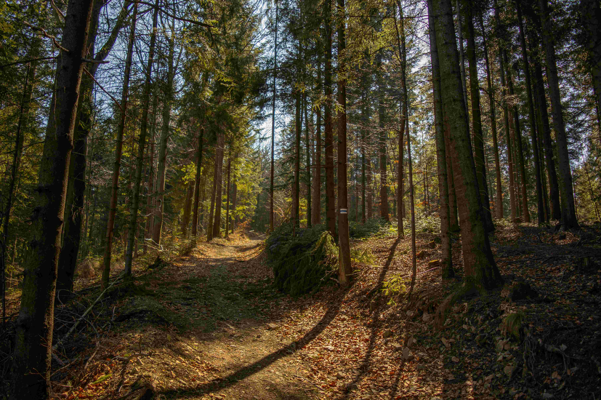
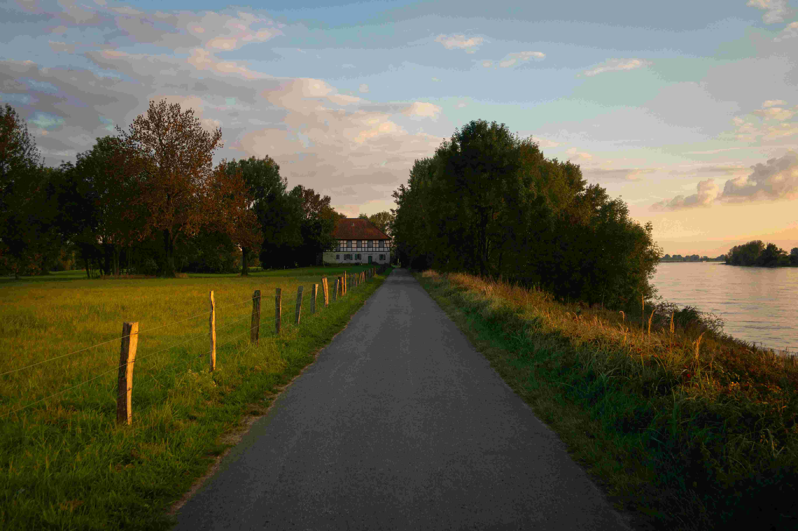

What You’ll Discover
Our walking trails guide you through meadows, orchards, and the animal fields. You’ll see where our produce grows, meet gentle animals, and enjoy the natural peace of the countryside.
Choose Your Path



Family Walk
A calm 1 km route around the animal barns and gardens — perfect for families with children.
Forest Trail
A 3 km route through the nearby woods, offering fresh air and quiet nature views.
Sunset Route
A scenic 2 km walk with views over the fields — most beautiful at golden hour.
Plan Your Visit
Walk at your own pace, take photos, and enjoy the farm's atmosphere.
Open daily from 9 AM to 6 PM.